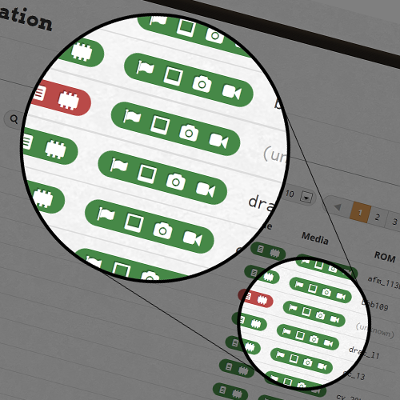

Design

Simple design based on Twitter Bootstrap.
- 
Vector icons make sure everything is looking crispy at any resolution or zoom setting.

CSS for realistic DMD and buttons.
A program that is not invoked explicitly, but lies dormant waiting for some condition(s) to occur.
A high score, a new table release, missing artwork or ROM file or just a user browsing tables.
Simple design based on Twitter Bootstrap.
Vector icons make sure everything is looking crispy at any resolution or zoom setting.
CSS for realistic DMD and buttons.
Node.JS
for ultralight server-side processing.
SocketStream
for kick-ass realtime features.
AngularJS
for client-side pleasure.
Of course such a project would be impossible without the help of Underscore.JS, Twitter Bootstrap, jQuery and many more.